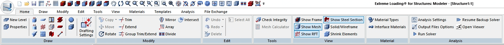
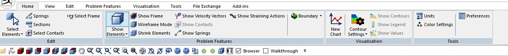
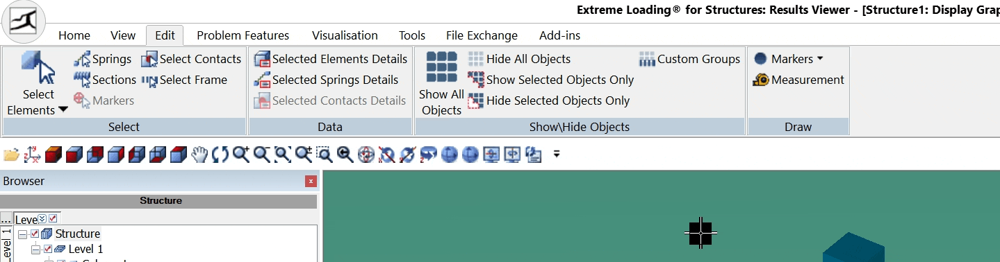
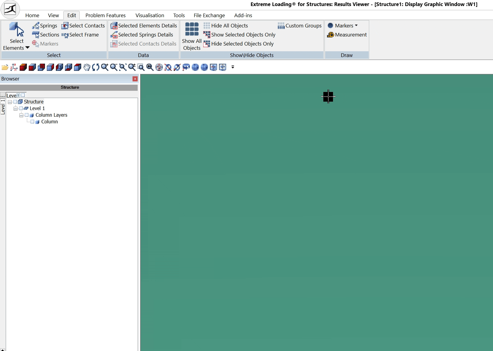
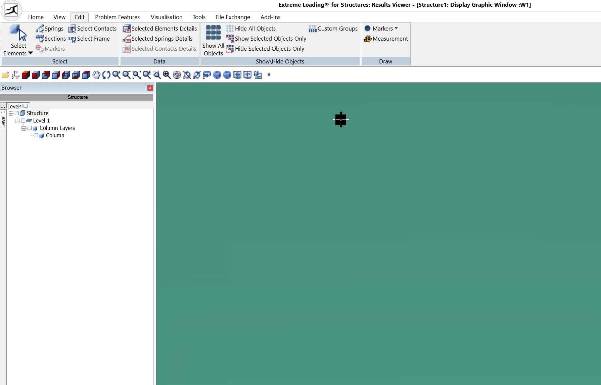

The ELS user interface has undergone a complete transformation in
version 11, offering a modern, streamlined experience while
maintaining all the powerful features users rely on. The new design
emphasizes clarity and efficiency, featuring a ribbon-based command
system, customizable quick access tools, and improved workspace
organization. This comprehensive overhaul makes it easier for both new
and experienced users to navigate the software's extensive
capabilities.
The introduction of the ribbon marks a significant milestone in the
ELS user experience. By replacing traditional menus with an intuitive
ribbon layout, users can now access tools and features more
efficiently. The ribbon, shown below, organizes and groups commands in
a logical, visual manner, making it easier for both new and
experienced users to find and utilize the functionality they need.
This modern approach to interface design reduces the learning curve
while maintaining quick access to all essential modeling and viewing
tools. The ribbon's contextual tabs and grouped commands provide a
clearer overview of all the available features, eliminating the need
to navigate through nested menu structures. This streamlined approach
helps users focus more on their modeling tasks, simulation
examination, and result visualization and reporting and focus less on
searching for commands.

A GIF showing the new ELS Ribbon in action

The Viewer's Ribbon
Quick Access Toolbar
With the purpose of complementing the new ribbon‐based interface in
mind, default toolbars from earlier versions have been deprecated in
favor of a customizable quick access toolbar.
The quick access toolbar is available in both Modeler and Viewer,
and can be customized to include any command from the ribbon. This
allows users to tailor their interface to their specific needs,
ensuring that the most frequently used tools are always within
reach. This process is done in one of
three methods:
Method 1: Right-click on any command in the
ribbon and select "Add to Quick Access Toolbar" from the context
menu.

Method 1
Method 2: Click the small arrow at the end of the
quick access toolbar and select the command from the default list
of commands in the Customize Quick Access dropdown menu.

Method 2
Method 3: Open the "Customize Quick Access
Toolbar" dialog by clicking 'More Commands' at the end of the
dropdown menu, choose the tab that contains the desired command
and add it to the list of commands in the quick access toolbar.

Method 3
Depending on the user's preference, the position of the quick access
toolbar can be changed to be displayed below the ribbon, to be
closer to the modeling window.